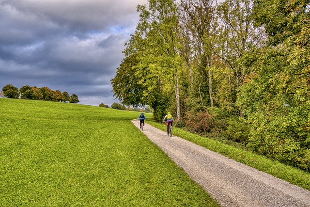
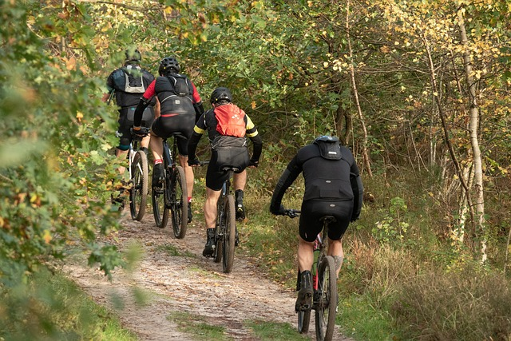

Most popular local trails
Scotland is home to some of the most beautiful and challenging bike trails in the world. From the rugged mountains of the Highlands to the rolling hills of the Lowlands, Scotland has a trail for every level of rider.

Glentress Trail
Glentress is a mountain biking trail center located in the Tweed Valley of Scotland. It features a variety of trails, from beginner to expert level, including cross-country, downhill, and freeride trails.
Who is it good for?
Beginners: 3/3
Intermediate: 3/3
Advanced: 3/3

Innerleithen Trails
Innerleithen is another popular mountain biking trail center located in the Tweed Valley of Scotland, about 7 miles southeast of Glentress. It is known for its technical and challenging downhill and freeride trails.
Who is it good for?
Beginners: 0/3
Intermediate: 3/3
Advanced: 3/3
Address
Melrose, 11 Abi Street
Edinburgh TD6 9LG
Working Hours
Monday - Sunday
8.00am - 7.00pm
Contact Us
info@bikeking.com
0131 285 6698